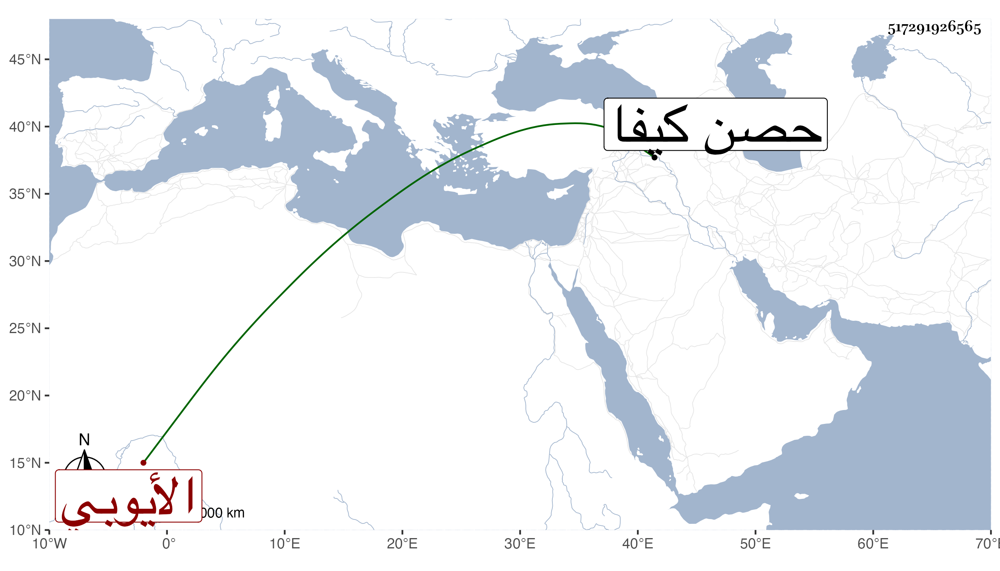

0902Sakhawi.DawLamic.ITO20230111-ara1.EIS1600.517291926565
Biography ID: 517291926565
1012
سليمان بن غازي بن محمد بن أبي بكر شادي وقيل ابن عبد الله بن تورانشاه بن أيوب بن محمد بن أبي بكر بن أيوب بن شادي العادل فخر الدين أبو المفاخر بن المجاهد شهاب الدين بن الكامل مجير الدين بن الموحد سيف الدين ابن المعظم بن الصالح بن الكامل أبي المعالي بن العادل الأيوبي . قال شيخنا في إنبائه أقعد ملوك أهل الأرض في مملكة حصن كيفا إلا صاحب صعدة الإمام الزيدي فإنه أقعد في المملكة منه . ملك الحصن بعد أبيه فدام نحو خمسين سنة وشكرت سيرته وحسنت أيامه وله فضائل ومكارم وأدب وشعر واعتناء بالكتب والآداب . مات في سنة سبع وعشرين واستقر بعده في مملكة الحصن ولده الأشرف أحمد الماضي ومن شعره
| أريعان الشباب عليك مني | سلام كلما هب النسيم |
| سروري مع زمانك قد تناءى | وعندي بعده وجد مقيم |
| فلا برحت لياليك الغوادي | وبدر التم لي فيها نديم |
| يغازلني بغنج والمحيا | يضيء وثغره در نظيم |
| وقد سل لدن ان تثنى | وريقته بها يشفى السقيم |
| إذا مزجت رحيق مع رضاب | ونحن بليل طرته نهيم |
| ونصبح في ألذ العيش حتى | تقول وشاتنا هذا النعيم |
| ونرفع في رياض الحسن طورا | وطورا للتعانق نستديم |
وهو في عقود المقريزي أطول من هذا .
